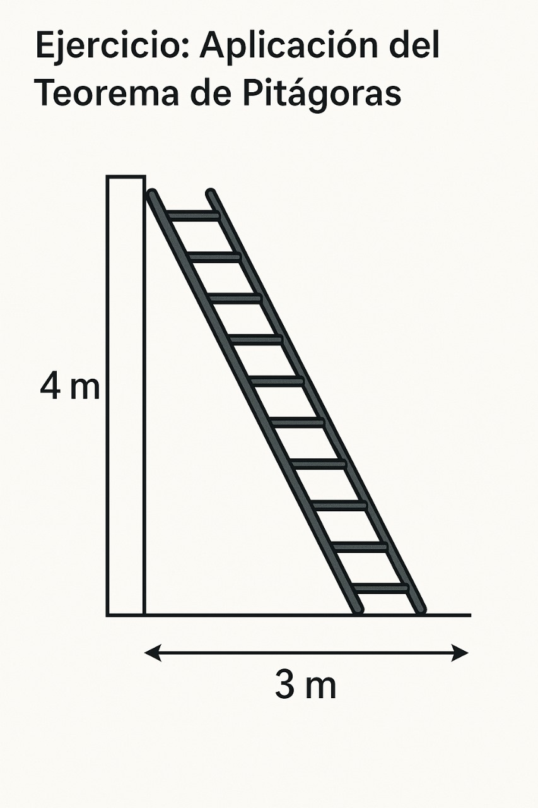

El Fascinante Teorema de Pitágoras

¿Qué es el Teorema de Pitágoras?
El Teorema de Pitágoras es uno de los conceptos fundamentales en la geometría euclidiana, especialmente cuando se trabaja con triángulos rectángulos. Establece una relación crucial entre las longitudes de los lados de estos triángulos.
Fue enunciado por el matemático y filósofo griego Pitágoras en el siglo VI a.C., aunque existen evidencias de que esta relación ya era conocida en civilizaciones anteriores como la babilónica y la egipcia.
La Fórmula Mágica
El teorema se expresa mediante una fórmula sencilla pero poderosa:
c² = a² + b²
Donde:
- a y b son las longitudes de los catetos del triángulo (los lados que forman el ángulo recto).
- c es la longitud de la hipotenusa (el lado opuesto al ángulo recto, siempre el más largo).

En palabras simples, el cuadrado de la hipotenusa es igual a la suma de los cuadrados de los catetos.
Ejemplo Visual
Aquí puedes visualizar cómo se cumple el Enunciado de este teorema:
(El video no necesita Internet)
¿Para Qué Sirve? Aplicaciones
Dejando de lado que aquí lo repasamos para llegar a comprender la Aplicación de las Funciones Trigonométricas, el Teorema de Pitágoras es increíblemente útil y tiene aplicaciones en:
- Construcción y Arquitectura: Para asegurar la cuadratura de estructuras y calcular distancias diagonales.
- Navegación: En mapas y sistemas GPS para calcular distancias entre dos puntos.
- Ingeniería: En el diseño de puentes, edificios y otras estructuras.
- Informática Gráfica: Para calcular distancias y posiciones en juegos y modelado 3D.
- Física: En el cálculo de vectores y distancias en movimiento.
Ejemplo Práctico: Calculando la Longitud de una Escalera
Imagina que tienes una pared de 4 metros de altura (cateto 'a') y quieres colocar una escalera de tal forma que su base esté a 3 metros de la pared (cateto 'b'). ¿Qué longitud mínima debe tener la escalera para alcanzar la parte superior de la pared?
Usamos la fórmula: c² = a² + b²
Conocemos a = 4 metros y b = 3 metros. Queremos encontrar c.
c² = 4² + 3²
c² = 16 + 9
c² = 25
c = ⟌25
c = 5 m
Así, la escalera llega a 5 metros de altura en la pared.

(Imagen de ejemplo: un triángulo que ilustra el problema de la escalera)
Video Explicativo
Para una explicación más visual, mira este video que resume el Teorema de Pitágoras y cómo aplicarlo:
¡Pon a Prueba tus Conocimientos!
¿Te sientes listo para resolver algunos problemas?
Empezar Ejercicios